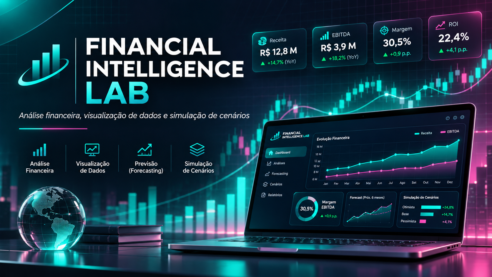

Framework
ICDF — Framework de Decisão em Crédito Integrado
Abordagem de decisão de crédito considerando risco e qualidade dos dados.
Abrir projeto ↗PÁGINA DE SOLUÇÕES
Ciência de Dados • Fraudes • Inteligência Financeira
Explore abordagens, modelos e aplicações documentadas, com foco em apoiar decisões, investigar riscos e conectar dados à estratégia.
APLICAÇÕES
Demonstrações e estudos que ilustram como os dados podem apoiar decisões.
CASOS SELECIONADOS
Aplicações acadêmicas e protótipos; os resultados de simulação não representam validação em produção.
Framework
Abordagem de decisão de crédito considerando risco e qualidade dos dados.
Abrir projeto ↗
Análise financeira
Protótipo de análise e simulação financeira para explorar cenários.
Abrir projeto ↗
Inteligência de negócios
Análise institucional, indicadores e planejamento estratégico em projeto acadêmico.
Abrir projeto ↗